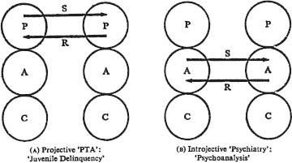

4 · Pastimes
PASTIMES occur in social and temporal matrices of varying degrees of complexity, and hence vary in complexity. However, if we use the transaction as the unit of social intercourse, we can dissect out of appropriate situations an entity which may be called a simple pastime. This may be defined as a series of semi-ritualistic, simple, complementary transactions arranged around a single field of material, whose primary object is to structure an interval of time. The beginning and end of the interval are typically signalled by procedures or rituals. The transactions are adaptively programmed so that each party will obtain the maximum gains or advantages during the interval. The better his adaptation, the more he will get out of it.
Pastimes are typically played at parties (‘social gatherings’) or during the waiting period before a formal group meeting begins; such waiting periods before a meeting ‘begins’ have the same structure and dynamics as ‘parties’. Pastimes may take the form described as ‘chit-chat’ or they may become more serious, e.g., argumentative. A large cocktail party often functions as a kind of gallery for the exhibition of pastimes. In one corner of the room a few people are playing ‘PTA’, another corner is the forum for ‘Psychiatry’, a third is the theatre for ‘Ever Been’ or ‘What Became’, the fourth is engaged for ‘General Motors’, and the buffet is reserved for women who want to play ‘Kitchen’ or ‘Wardrobe’. The proceedings at such a gathering may be almost identical, with a change of names here and there, with the proceedings at a dozen similar parties taking place simultaneously in the area. At another dozen in a different social stratum, a different assortment of pastimes is underway.
Pastimes may be classified in different ways. The external determinants are sociological (sex, age, marital status, cultural, racial or economic). ‘General Motors’ (comparing cars) and ‘Who Won’ (sports) are both ‘Man Talk’. ‘Grocery’, ‘Kitchen’, and ‘Wardrobe’ are all ‘Lady Talk’ – or, as practised in the South Seas, ‘Mary Talk’. ‘Making Out’ is adolescent, while the onset of middle age is marked by a shift to ‘Balance Sheet’. Other species of this class, which are all variations of ‘Small Talk’, are: ‘How To’ (go about doing something), an easy filler for short airplane trips; ‘How Much’ (does it cost), a favourite in lower middle-class bars; ‘Ever Been’ (to some nostalgic place), a middle-class game for ‘oldhands’ such as salesmen ;‘Do You Know’ (so-and-so) for lonely ones; ‘What Became’ (of good old Joe), often played by economic successes and failures: ‘Morning After’ (what a hangover) and ‘Martini’ (I know a better way), typical of a certain kind of ambitious young person.
The structural-transactional classification is a more personal one. Thus ‘PTA’ may be played at three levels. At the Child-Child level it takes the form of ‘How do You Deal with Recalcitrant Parents’; its Adult-Adult form, ‘PTA’ proper, is popular among well-read young mothers; with older people it tends to take the dogmatic Parent-Parent form of ‘Juvenile Delinquency’. Some married couples play ‘Tell Them Dear’, in which the wife is Parental and the husband comes through like a precocious child. ‘Look Ma No Hands’ is similarly a Child-Parent pastime suitable for people of any age, sometimes diffidently adapted into ‘Aw Shucks Fellows’.
Even more cogent is the psychological classification of pastimes. Both ‘PTA’ and ‘Psychiatry’, for example, may be played in either projective or introjective forms. The analysis of ‘PTA Projective Type, is represented in Figure 6A, based on the following Parent-Parent paradigm:
A: ‘There wouldn’t be all this delinquency if it weren’t for broken homes.’
B: ‘It’s not only that. Even in good homes nowadays the children aren’t taught manners the way they used to be.’
‘PTA’, Introjective Type, runs along the following lines (Adult-Adult):
C: ‘I just don’t seem to have what it takes to be a mother.’
D: ‘No matter how hard you try, they never grow up the way you want them to, so you have to keep wondering if you’re doing the right thing and what mistakes you’ve made.’
‘Psychiatry’, Projective Type, takes the Adult-Adult form:
E: ‘I think it’s some unconscious oral frustration that makes him act that way.’
F: ‘You seem to have your aggressions so well sublimated.’
Figure 6B represents ‘Psychiatry’, Introjective Type, another Adult-Adult pastime.
G: ‘That painting symbolizes smearing to me.’
H: ‘In my case, painting is trying to please my father.’

Figure 6. Pastimes
Besides structuring time and providing mutually acceptable stroking for the parties concerned, pastimes serve the additional function of being social-selection processes. While a pastime is in progress, the Child in each player is watchfully assessing the potentialities of the others involved. At the end of the party, each person will have selected certain players he would like to see more of, while others he will discard, regardless of how skilfully or pleasantly theyeach engaged in the pastime. The ones he selects are those who seem the most likely candidates for more complex relationships – that is, games. This sorting system, however well rationalized, is actually largely unconscious and intuitive.
In special cases the Adult overrides the Child in the selection process. This is most clearly illustrated by an insurance salesman who carefully learns to play social pastimes. While he is playing, his Adult listens for possible prospects and selects them from the players as people he would like to see more of. Their adeptness at games or congeniality is quite irrelevant to his process of selection, which is based, as in most cases, on peripheral factors – in this instance, financial readiness.
Pastimes, however, have a quite specific aspect of exclusiveness. For example, ‘Man Talk’ and ‘Lady Talk’ do not mix. People playing a hard hand of ‘Ever Been’ (there) will be annoyed by an intruder who wants to play ‘How Much’ (for avocados) or ‘Morning After’. People playing Projective ‘PTA’ will resent the intrusion of Introjective ‘PTA’, athough usually not as intensely as the other way around.
Pastimes form the basis for the selection of acquaintances, and may lead to friendship. A party of women who drop in at each other’s houses every morning for coffee to play ‘Delinquent Husband’ are likely to give a cool reception to a new neighbour who wants to play ‘Sunny Side Up’. If they are saying how mean their husbands are, it is too disconcerting to have a newcomer declare that her husband is just marvellous, in fact perfect, and they will not keep her long. So at a cocktail party, if someone wants to move from one corner to another, he must either join in the pastime played in his new location or else successfully switch the whole proceeding into a new channel. A good hostess, of course, takes the situation in hand immediately and states the programme: ‘We were just playing Projective “PTA”. What do you think?’ Or: ‘Come now, you girls have been playing “Wardrobe” long enough Mr J here is a writer/politician/surgeon, and I’m sure he’d like to play “Look Ma No Hands”. Wouldn’t you, Mr J?’
Another important advantage obtained from pastimes is the confirmation of role and the stabilizing of position. A role is something like what Jung calls persona, except that it is less opportunistic and more deeply rooted in the individual’s fantasies. Thus in Projective ‘PTA’ one player may take the role of tough Parent, another the role of righteous Parent, a third the role of indulgent Parent and a fourth the role of helpful Parent. All four experience and exhibit a Parental ego state, but each presents himself differently. The role of each one is confirmed if it prevails – that is, if it meets with no antagonism or is strengthened by any antagonism it meets or is approved by certain types of people with stroking.
The confirmation of his role stabilizes the individual’s position, and this is called the existential advantage from the pastime. A position is a simple predicative statement which influences all of the individual’s transactions; in the long run it determines his destiny and often that of his descendants as well. A position may be more or less absolute. Typical positions from which Projective ‘PTA’ can be played are: ‘All children are bad!’ ‘All other children are bad!’ ‘All children are sad!’ ‘All children are persecuted!’ These positions might give rise to the role of the tough, the righteous, the indulgent and the helpful Parent, respectively. Actually a position is primarily manifested by the mental attitude to which it gives rise, and it is with this attitude that the individual undertakes the transactions which constitute his role.
Positions are taken and become fixed surprisingly early, from the second or even the first year to the seventh year of life – in any case long before the individual is competent or experienced enough to make such a serious commitment. It is not difficult to deduce from an individual’s position the kind of childhood he must have had. Unless something or somebody intervenes, he spends the rest of his life stabilizing his position and dealing with situations that threaten it: by avoiding them, warding off certain elements or manipulating them provocatively so that they are transformed from threats into justifications. One reason pastimes are so stereotyped is that they serve such stereotyped purposes. But the gains they offer show why people play them so eagerly, and why they can be so pleasant if played with people who have constructive or benevolent positions to maintain.
A pastime is not always easy to distinguish from an activity, and combinations frequently occur. Many commonplace pastimes, such as ‘General Motors’, consist of what psychologists might call Multiple-Choice – Sentence-Completion exchanges.
A. ‘I like a Ford/Chevrolet/Plymouth better than a Ford/Chevrolet/Plymouth because …’
B. ‘Oh. Well, I’d rather have a Ford/Chevrolet/Plymouth than a Ford/Chevrolet/Plymouth because …’
It is apparent that there may actually be some useful information conveyed in such stereotypes.
A few other common pastimes may be mentioned. ‘Me Too’ is often a variant of ‘Ain’t It Awful’. ‘Why Don’t They’ (do something about it) is a favourite among housewives who do not wish to be emancipated. ‘Then We’ll’ is a Child-Child pastime. ‘Let’s Find’ (something to do) is played by juvenile delinquents or mischievous grown-ups.